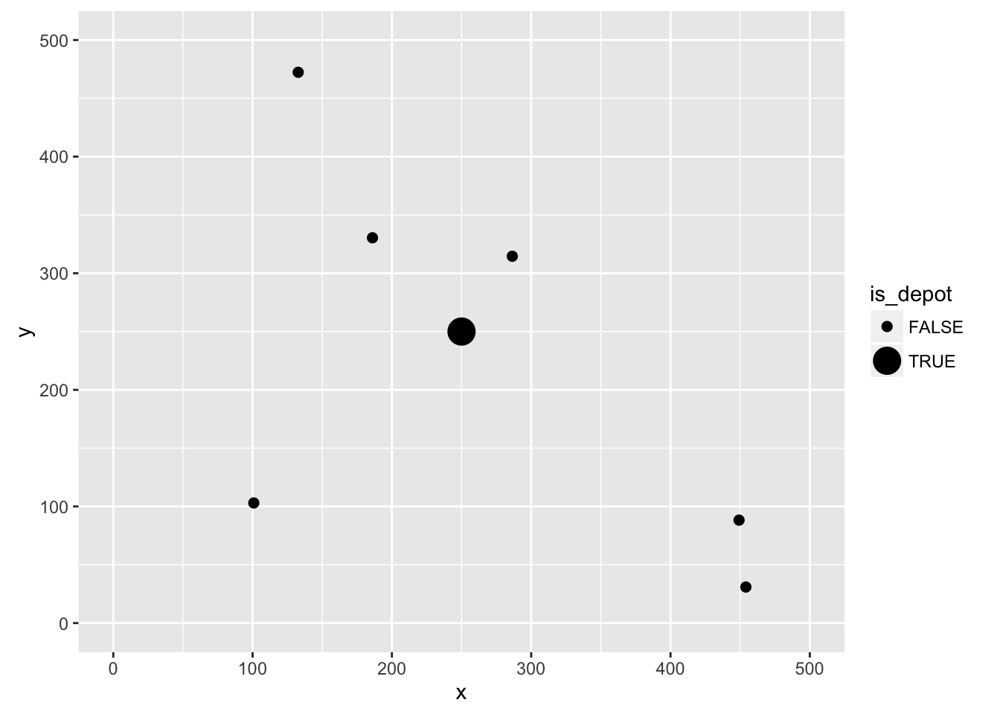
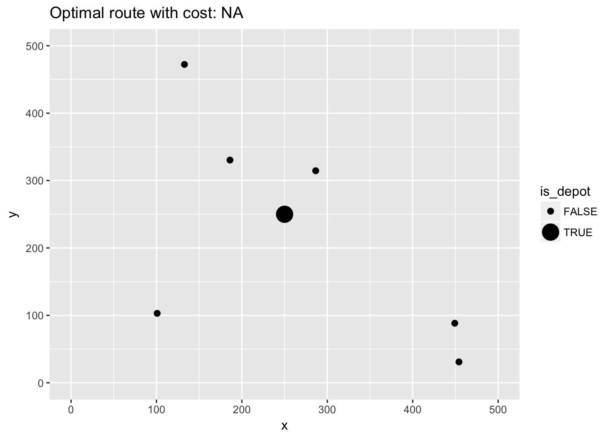

This vignette decribes how to solve the mTSP using ompr. The problem is similiar to the standard TSP but now we have more than one Salesman. Please refer to the vignette on the standard TSP for more background information. All salesmen start and end their trips at a single location (the depot). In addition, all salesmen need to visit at least one client.
First let us import some librarys
library(knitr)
library(dplyr)
library(ggplot2)The number of cities:
n <- 7The number of salesmen:
m <- 2Boundary of our Euclidean space:
# from 0 to ...
max_x <- 500
max_y <- 500Some random cities and the depot in the middle:
set.seed(1)
cities <- data.frame(id = 1:n, x = c(max_x / 2, runif(n - 1, max = max_x)),
y = c(max_y / 2, runif(n - 1, max = max_y))) %>%
mutate(is_depot = ifelse(id == 1, TRUE, FALSE))
ggplot(cities, aes(x, y)) +
geom_point(aes(size = is_depot)) +
scale_y_continuous(limits = c(0, max_y)) +
scale_x_continuous(limits = c(0, max_x))
Now the distance matrix
distance <- as.matrix(dist(select(cities, x, y), diag = TRUE, upper = TRUE))As in the other TSP example we will use the MTZ formulation and solve a fairly small mTSP. The basic idea is to extend the two index formulation to three indexes \(x_{i,j,k}\) that is 1 iff salesman \(k\) travels from \(i\) to \(j\).
Import ompr.
library(ompr)Formulate the model. By convention the node with index \(1\) is the depot.
# the depot is always idx 1
model <- MIPModel() %>%
# we create a variable that is 1 iff we travel from city i to j by Salesman k
add_variable(x[i, j, k], i = 1:n, j = 1:n, k = 1:m, type = "binary") %>%
# helper variable for the MTZ sub-tour constraints
add_variable(u[i, k], i = 1:n, k = 1:m, lb = 1, ub = n) %>%
# minimize travel distance and latest arrival
set_objective(sum_expr(distance[i, j] * x[i, j, k], i = 1:n, j = 1:n, k = 1:m), "min") %>%
# you cannot go to the same city
add_constraint(x[i, i, k] == 0, i = 1:n, k = 1:m) %>%
# each salesman needs to leave the depot
add_constraint(sum_expr(x[1, j, k], j = 2:n) == 1, k = 1:m) %>%
# each salesman needs to come back to the depot
add_constraint(sum_expr(x[i, 1, k], i = 2:n) == 1, k = 1:m) %>%
# if a salesman comes to a city he has to leave it as well
add_constraint(sum_expr(x[j, i, k], j = 1:n) == sum_expr(x[i, j, k], j = 1:n), i = 2:n, k = 1:m) %>%
# leave each city with only one salesman
add_constraint(sum_expr(x[i, j, k], j = 1:n, k = 1:m) == 1, i = 2:n) %>%
# arrive at each city with only one salesman
add_constraint(sum_expr(x[i, j, k], i = 1:n, k = 1:m) == 1, j = 2:n) %>%
# ensure no subtours (arc constraints)
add_constraint(u[i, k] >= 2, i = 2:n, k = 1:m) %>%
add_constraint(u[i, k] - u[j, k] + 1 <= (n - 1) * (1 - x[i, j, k]), i = 2:n, j = 2:n, k = 1:m)
model## Mixed linear integer optimization problem
## Variables:
## Continuous: 14
## Integer: 0
## Binary: 98
## Model sense: minimize
## Constraints: 126This model can now be solved by one of the many solver libraries. Here we will use GLPK.
library(ompr.roi)
library(ROI.plugin.glpk)result <- solve_model(model, with_ROI(solver = "glpk"))To extract the solution we can use get_solution method that will return a data.frame which we can further be used with tidyverse packages.
solution <- get_solution(result, x[i, j, k]) %>%
filter(value > 0)
kable(head(solution, 3))| variable | i | j | k | value |
|---|---|---|---|---|
| x | 3 | 1 | 1 | 1 |
| x | 4 | 2 | 1 | 1 |
| x | 2 | 3 | 1 | 1 |
Now we need to link back the indexes in our model with the actual cities.
paths <- select(solution, i, j, k) %>%
rename(from = i, to = j, salesman = k) %>%
mutate(trip_id = row_number()) %>%
tidyr::gather(property, idx_val, from:to) %>%
mutate(idx_val = as.integer(idx_val)) %>%
inner_join(cities, by = c("idx_val" = "id"))
kable(head(arrange(paths, trip_id), 4))| salesman | trip_id | property | idx_val | x | y | is_depot |
|---|---|---|---|---|---|---|
| 1 | 1 | from | 3 | 186.0619 | 330.3989 | FALSE |
| 1 | 1 | to | 1 | 250.0000 | 250.0000 | TRUE |
| 1 | 2 | from | 4 | 286.4267 | 314.5570 | FALSE |
| 1 | 2 | to | 2 | 132.7543 | 472.3376 | FALSE |
And plot it:
ggplot(cities, aes(x, y)) +
geom_point(aes(size = is_depot)) +
geom_line(data = paths, aes(group = trip_id, color = factor(salesman))) +
ggtitle(paste0("Optimal route with cost: ", round(objective_value(result), 2))) +
scale_y_continuous(limits = c(0, max_y)) +
scale_x_continuous(limits = c(0, max_x))
Do you have any questions, ideas, comments? Or did you find a mistake? Let’s discuss on Github.